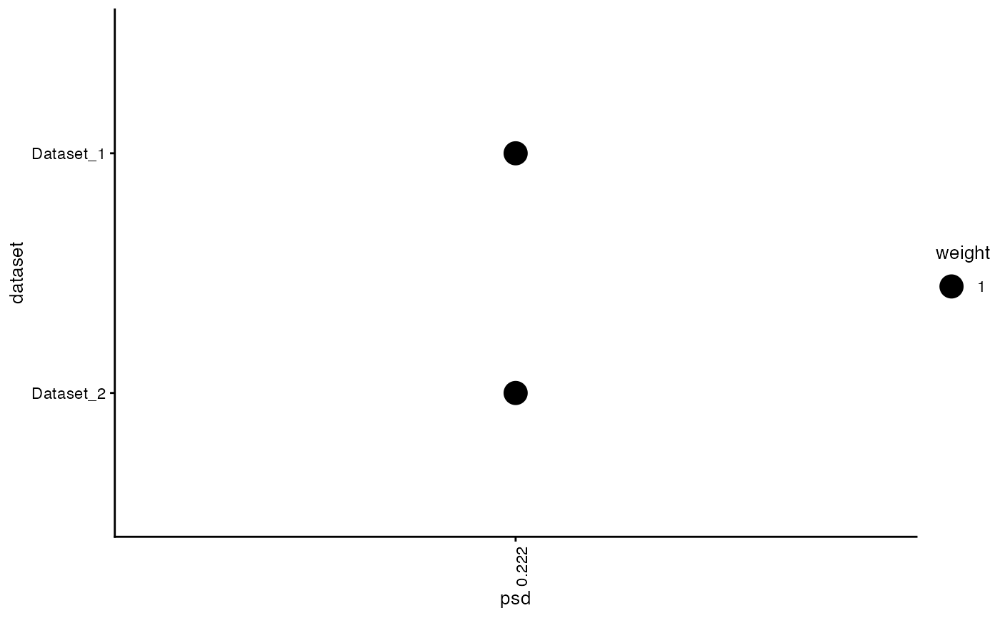
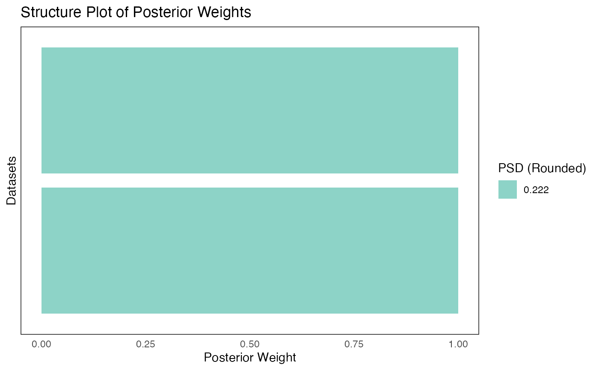

Generates a plot for a fash object, providing either a
heatmap of posterior weights or a structure plot summarizing
component contributions across datasets.
A fash object containing the results of the FASH pipeline.
A character string specifying the type of plot to generate.
One of:
- "heatmap": Bubble/heatmap plot of posterior weights (default).
- "structure": Structure plot of mixture components.
- "function": Plot fitted effect function for a selected unit.
A character string specifying the method for reordering datasets in the structure plot.
Only used if plot_type = "structure".
- "mean": Reorder by the mean of the posterior PSD.
- "lfdr": Reorder by the local false discovery rate.
- NULL: No reordering (default).
A logical value. If TRUE, treats PSD values as discrete categories with distinct colors
in the structure plot. Ignored if plot_type = "heatmap" or "function".
Additional arguments passed to plot_heatmap, fash_structure_plot or plot_function,
A plot object (typically a ggplot).
set.seed(1)
data_list <- list(
data.frame(y = rpois(5, lambda = 5), x = 1:5, offset = 0),
data.frame(y = rpois(5, lambda = 5), x = 1:5, offset = 0)
)
grid <- seq(0, 2, length.out = 10)
fash_obj <- fash(data_list = data_list, Y = "y", smooth_var = "x", offset = "offset", grid = grid, likelihood = "poisson", verbose = TRUE)
#> Starting data setup...
#> Completed data setup in 0.00 seconds.
#> Starting likelihood computation...
#>
|
| | 0%
|
|=================================== | 50%
|
|======================================================================| 100%
#> Completed likelihood computation in 0.08 seconds.
#> Starting empirical Bayes estimation...
#> Completed empirical Bayes estimation in 0.00 seconds.
#> fash object created successfully.
# Heatmap plot
plot(fash_obj)

# Structure plot
plot(fash_obj, plot_type = "structure", ordering = "mean", discrete = TRUE)
